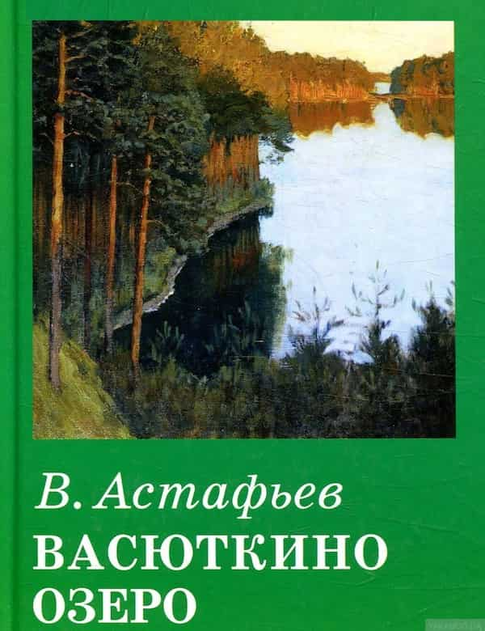

Автор: Астафьев Виктор Петрович
Жанр: Литература 20 века, Русская классика, Советская литература, Список школьной литературы 5-6 класс

Описание книги:
«Это озеро не отыщешь на карте. Небольшое оно. Небольшое, зато памятное для Васютки. Еще бы! Мала ли честь для тринадцатилетнего мальчишки – озеро, названное его именем! Пускай оно и не велико, не то что, скажем, Байкал, но Васютка сам нашел его и людям показал. Да, да, не удивляйтесь и не думайте, что все озера уже известны и что у каждого есть свое название. Много еще, очень много в нашей стране безымянных озер и речек, потому что велика наша Родина и, сколько по ней ни броди, все будешь находить что-нибудь новое, интересное…»